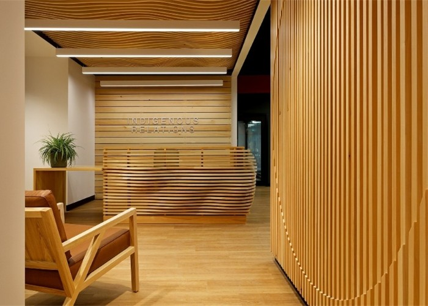
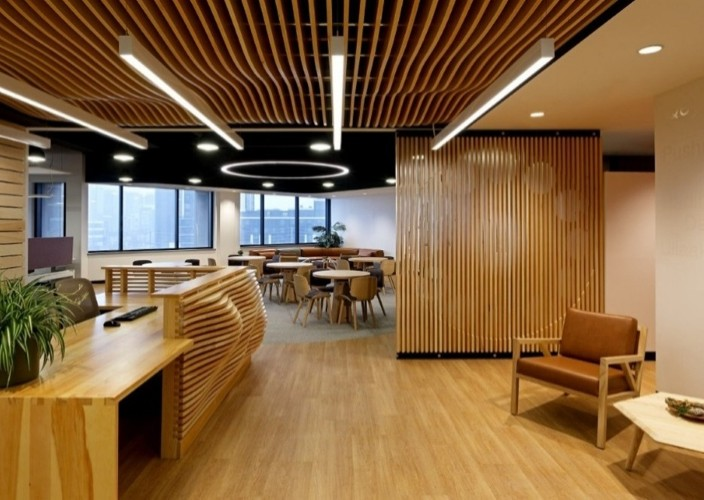
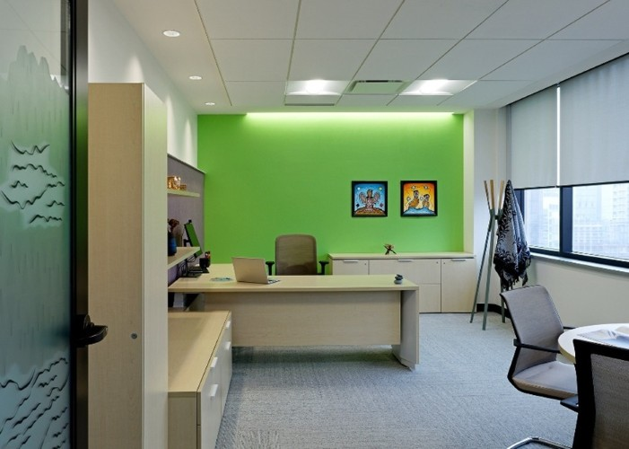

UW | Office of Indigenous Relations • Retrofit
Waterloo, ON
The Office of Indigenous Relations at the University of Waterloo serves as a sanctuary for Indigenous staff, students, faculty, and the broader campus community. The architectural narrative is deeply rooted in the imagery and motifs of the Haudenosaunee and Anishinaabe Peoples, creating a space that is as symbolic as it is functional.
Design inspiration is drawn from the local landscape and traditional teachings, specifically referring to the Grand River and the Tree of Peace. Natural white pine elements are used throughout to create a warm, inviting atmosphere while reinforcing the project’s core symbology.
At the heart of the office is a bright, naturally lit kitchen and gathering area, designed to accommodate a variety of communal activities and flexible event formats. Significantly, the office is one of the few indoor spaces on campus engineered to support ceremonial smudging, further cementing its role as a culturally safe and inclusive environment.

Suite Entrance
Transparency is a key driver at the suite entrance, where a glass assembly offers an unobstructed view into the reception.
Positioned at this primary interface, a commissioned art piece acts as a symbolic welcome, bridging the public realm of the building with the specialized Indigenous-led programming within.
Reception
From the moment of arrival, the interplay of welcoming text, vibrant artwork, and organic wood finishes makes it clear: this space is unlike any other on campus.
It is a proclamation of the center’s mission to provide a dedicated, culturally resonant home for Indigenous knowledge and community.
Gathering Space
At the center of the suite lies its most vibrant feature: a spacious gathering area and integrated kitchen.
By placing the act of sharing food at its core, the design fosters a sense of warmth and inclusivity, creating a 'home away from home' for students, professionals, and the local Indigenous community.
Lounge Space
Complementing the large event space, the informal lounge provides a 'third space' for visitors and tenants.
Its welcoming atmosphere and adaptable layout make it the perfect spot for the informal knowledge-sharing and connection that define the suite’s unique culture.
Meeting Room
The primary meeting room is engineered for a high degree of acoustic comfort, creating a serene environment for focused dialogue.
The space is anchored by a custom live-edge boardroom table, while the glass partitions feature a sophisticated graphic film designed by Indigenous artist and architect Danny Roy, balancing transparency with necessary privacy.
Danny Roy’s original film graphic transforms the meeting room into a space of deep territorial acknowledgement.
By blending clan motifs with the geography of the Carolinian Life Zone, the artwork ensures that every conversation within the room is grounded in the history and ecology of the Grand River territory.
Director’s Office
Reflecting the importance of Indigenous leadership on campus, the Director of the University of Waterloo Office of Indigenous Relations occupies a prominent, light-filled office.
The glass partitions are treated with custom film graphics, ensuring privacy and adding a layer of sophisticated Indigenous design that resonates with the center’s broader aesthetic.



Project Info
- Project Name: UW | Office of Indigenous Relations • Retrofit
- Year Completed: 2022
- Location: Waterloo, ON, Canada
- Firm: Brook McIlroy Incorporated
- Position: Project Architect/Manager